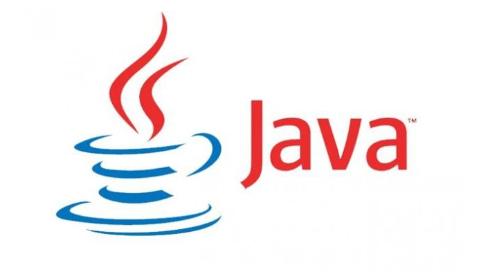
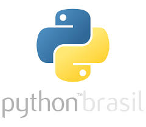

JavaScript é uma linguagem de programação interpretada estruturada, de script em alto nível com tipagem dinâmica fraca e multiparadigma. Juntamente com HTML e CSS, o JavaScript é uma das três principais tecnologias da World Wide Web.
JavaScript é uma linguagem de programação interpretada estruturada, de script em alto nível com tipagem dinâmica fraca e multiparadigma. Juntamente com HTML e CSS, o JavaScript é uma das três principais tecnologias da World Wide Web.
 Java é o ambiente computacional, ou plataforma, criada pela empresa estadunidense Sun Microsystems, e vendida para a Oracle depois de alguns anos. A plataforma permite desenvolver programas utilizando a linguagem de programação
 HTML (HiperText Markup Language) é o código utilizado para fazer um website. CSS (Cascading Style Sheets) por sua vez, é o código utilizado para deixar o seu website bonito. ... Para ter conhecimentos em CSS o Web designer precisa primeiramente dominar os conceitos HTML para aplicar o CSS, o estilo.
HTML (HiperText Markup Language) é o código utilizado para fazer um website. CSS (Cascading Style Sheets) por sua vez, é o código utilizado para deixar o seu website bonito. ... Para ter conhecimentos em CSS o Web designer precisa primeiramente dominar os conceitos HTML para aplicar o CSS, o estilo.
 PHP é uma linguagem interpretada livre, usada originalmente apenas para o desenvolvimento de aplicações presentes e atuantes no lado do servidor, capazes de gerar conteúdo dinâmico na World Wide Web.
PHP é uma linguagem interpretada livre, usada originalmente apenas para o desenvolvimento de aplicações presentes e atuantes no lado do servidor, capazes de gerar conteúdo dinâmico na World Wide Web.
 Python é uma linguagem de programação de alto nível, interpretada de script, imperativa, orientada a objetos, funcional, de tipagem dinâmica e forte. Foi lançada por Guido van Rossum em 1991.